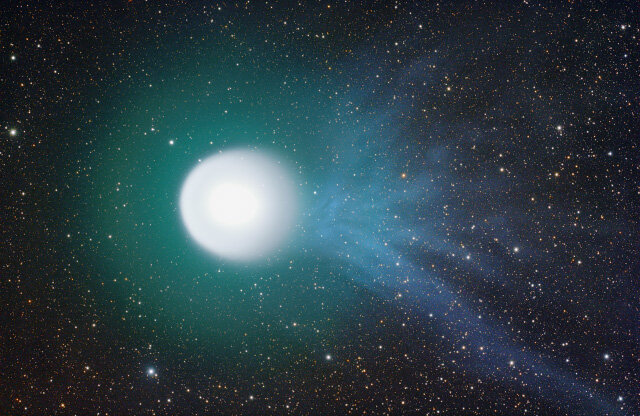
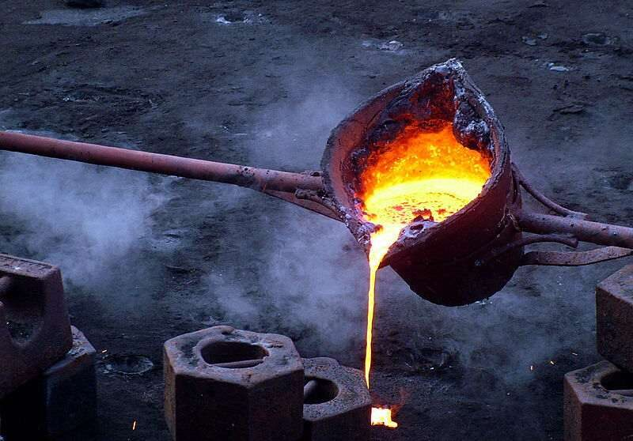
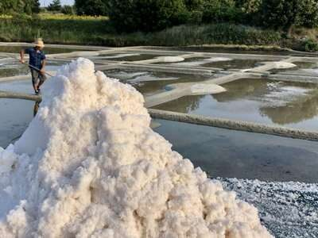
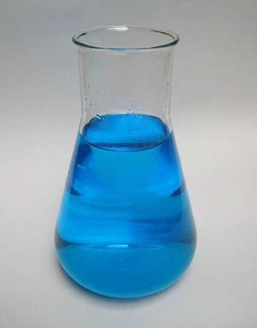
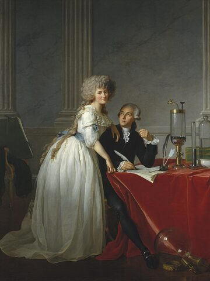

Transformations physiques et chimiques
Ce chapitre sera débloqué en fin de séquence, au rythme de la classe. Le code de déblocage est transmis via le cahier de textes — il figure aussi en bas de ta fiche de cours.
Sommaire du chapitre
Physique-Chimie · Seconde générale · Thème 1 — Constitution et transformations de la matière
Transformations physiques et chimiques
Thème 1 · Chapitre 2 — cours & exercices corrigés
01 Physique ou chimique ?
Une transformation physique est une transformation au cours de laquelle la matière change d'apparence, de forme, d'état mais les espèces chimiques (molécules) ne changent pas.
Une transformation chimique est une transformation au cours de laquelle certaines substances disparaissent et d'autres apparaissent. Les espèces chimiques sont modifiées.

On considère les neuf situations suivantes :
- a) obtention d'une flamme (briquet) — b) formation de la rosée — c) dissolution de sucre dans du café ;
- d) récolte de sel dans un marais salant — e) infusion de thé dans l'eau — f) formation de vin à partir de jus de raisin ;
- g) détartrage de la bouilloire pour éliminer le calcaire — h) obtention de neige avec un canon à neige — i) explosions de feux d'artifice pour un spectacle pyrotechnique.
Classer chaque situation : s'agit-il d'une transformation physique ou d'une transformation chimique ?
Voir la correction
| Transformation physique | Transformation chimique |
|---|---|
| b · c · d · e · h rosée, dissolution du sucre, récolte de sel, infusion, neige |
a · f · g · i flamme, vin, détartrage, feux d'artifice |
02 Effet thermique des transformations
Une transformation qui libère de l'énergie sous forme de chaleur est appelée réaction exothermique.
Une transformation qui prend de la chaleur au milieu extérieur est appelée réaction endothermique.
Le combustible de la bougie est la paraffine, de formule brute C18H36O2, qui brûle dans l'air à l'aide du comburant dioxygène O2. Les produits formés sont le dioxyde de carbone CO2 et l'eau H2O.
C18H36O2 (s) + 26 O2 (g) → 18 CO2 (g) + 26 H2O(l)
Cette réaction produit de la chaleur : c'est une réaction exothermique.
Autres exemples :
- La combustion du glucose dans le corps humain est une transformation chimique produisant de l'énergie thermique pendant l'effort. C'est une transformation exothermique.
- La fusion de l'eau (passage de l'état solide à liquide) est une transformation physique nécessitant un apport d'énergie thermique, c'est une transformation endothermique.
03 États et changements d'état
Dans les conditions de température et de pression à la surface de la Terre, on distingue principalement trois états de la matière :
- Gazeux (g) : les entités sont agitées, espacées, libres les unes par rapport aux autres (non liées), elles s'entrechoquent sans cesse ;
- Liquide (l) : les entités sont mobiles (mais moins de liberté de mouvement que dans un gaz), proches, peu liées ou par des liaisons faibles ;
- Solide (s) : les entités sont presque immobiles (elles vibrent), très proches et liées fortement entre elles.
Lors d'un changement d'état, les propriétés de la matière changent, l'agitation et l'arrangement spatial des entités sont modifiés. Les liaisons entre les entités s'affaiblissent ou se renforcent, se rompent ou se créent.
Les six changements d'état sont à connaître par cœur !
Donner un exemple pour chacun des changements d'état suivants : vaporisation, solidification, condensation.
Voir la correction
Vaporisation : ébullition de l'eau dans une casserole.
Solidification : formation d'un glaçon.
Condensation : formation des flocons de neige ou de la grêle dans l'atmosphère.
Lors du changement d'état d'un corps pur, la température ne varie plus. Cette température est alors appelée température de changement d'état, notée θchangement d'état.
Manipulation réalisée : un tube à essai contenant de l'eau distillée est placé dans un calorimètre contenant un mélange réfrigérant (glaçons + sel) ; on relève la température toutes les minutes pendant 25 minutes. Les données de l'eau salée sont fournies par le professeur.
① palier à θ = 0 °C : les états solide et liquide coexistent, la température reste constante. ② rupture de pente à environ −4 °C : apparition des premiers cristaux dans l'eau salée.
L'eau distillée présente un palier à θ = 0 °C : le changement d'état d'un corps pur se fait à température constante, appelée température de changement d'état. L'eau salée ne présente aucun palier : c'est un mélange, on ne peut pas définir de température de changement d'état (la solidification s'étale ici d'environ −4 °C à −10 °C).
C'est pourquoi on sale les routes : entre −4 °C et −10 °C environ, l'eau salée reste (au moins partiellement) liquide alors que l'eau pure serait déjà entièrement gelée. En dessous, on peut ajouter davantage de sel, car ces températures dépendent de la concentration en sel du mélange.
On étudie deux courbes de refroidissement : la première présente un palier de température vers 6 °C ; la seconde (refroidissement d'un cola) décroît régulièrement, sans palier.
Déterminer si chaque étude porte sur un corps pur ou sur un mélange. Si possible, préciser la température de changement d'état.
Voir la correction
Courbe 1 : on observe un palier de température à environ θ = 6 °C, il s'agit donc de la solidification d'un corps pur et la température de solidification est θsolidification = 6 °C.
Courbe 2 (cola) : on n'observe pas de palier, il s'agit donc d'un mélange et il n'y a pas de température de changement d'état.
04 Équation d'un changement d'état
Au cours d'un changement d'état physique, les espèces chimiques ne sont pas modifiées. Pour modéliser le changement d'état physique d'une espèce chimique A, on écrit l'équation :
A(état physique initial) → A(état physique final)
Pour la fusion de l'eau solide, l'équation s'écrit :
H2O(s) → H2O(l)
Établir l'équation de la condensation de l'eau, puis de la solidification du fer Fe.
Voir la correction
H2O(g) → H2O(s)
Fe(l) → Fe(s)
Quels sont les changements d'état décrits par les équations suivantes ?
H2O(g) → H2O(s)
Cu(s) → Cu(g)
Voir la correction
Première équation : il s'agit de la condensation (état gazeux (g) à solide (s)) de l'eau H2O.
Seconde équation : il s'agit de la sublimation (état solide (s) à gazeux (g)) du cuivre Cu.
05 Énergie de changement d'état
L'énergie massique de changement d'état L d'un corps pur est l'énergie thermique que doit absorber ou libérer par transfert thermique 1 kg de ce corps pour le faire changer d'état à sa température de changement d'état pour une pression donnée. Elle s'exprime en J.kg⁻¹.
L'énergie nécessaire pour passer d'un état 1 à un état 2 est la même (au signe près) que pour passer de l'état 2 à l'état 1. Ainsi :
Lfusion = −Lsolidification
Lsublimation = −Lcondensation
Le signe traduit le sens de l'échange d'énergie. Lors de la fusion, on apporte de l'énergie au système : l'agitation des particules augmente, ce qui affaiblit les liaisons entre elles (Lfusion > 0, l'énergie entre). Lors de la solidification, c'est l'inverse : le système cède de l'énergie au milieu extérieur, l'agitation diminue et les liaisons se reforment (Lsolidification < 0, l'énergie sort).
Quelle quantité d'énergie faut-il pour faire fondre 1 kg de glace ?
Données : Lfusion = 336 kJ.kg⁻¹
Voir la correction
Pour 1 kg de glace, il faut exactement l'énergie massique de fusion : Q = 1 × 336 = 336 kJ.
L'énergie Q échangée avec le milieu extérieur lors du changement d'état d'un corps pur de masse m est égale au produit de sa masse par son énergie massique de changement d'état L. Q est aussi appelée quantité de chaleur et, comme toute énergie, Q s'exprime en joule J.
m masse · kg
L énergie massique · J.kg⁻¹
On étudie la solidification de 200 g de fer pur en fusion.
Quelle énergie est transférée avec le milieu extérieur lors de cette solidification ? Schématiser le transfert d'énergie.

Données : Lfusion fer = 270 kJ.kg⁻¹ · Lsolidification fer = −270 kJ.kg⁻¹
Voir la correction
mfer = 200 g = 0,200 kg. On étudie la solidification du fer, donc Lsolidification fer = −270 kJ.kg⁻¹ = −270 000 J.kg⁻¹.
Q = m × L
Q = mfer × Lsolidification fer
Q = 0,200 × (−270 000) = −54 000 J = −54 kJ
Q < 0 : le fer cède de l'énergie au milieu extérieur. La solidification est une réaction exothermique.
La tsar bomba, l'arme la plus puissante jamais testée, a libéré une énergie de 57 mégatonnes de TNT.
Quelle masse d'eau pourrions-nous vaporiser avec l'énergie libérée par la tsar bomba ?
Données : 1 Mt = 4,2 × 10¹⁵ J · Lvaporisation eau = 2,3 × 10⁶ J.kg⁻¹
Voir la correction
QTB = 57 Mt = 57 × 4,2 × 10¹⁵ = 2,394 × 10¹⁷ J.
Q = m × L, donc :
mH₂O = QTBLvaporisation eau
mH₂O = 2,394 × 10¹⁷ ÷ 2,3 × 10⁶ ≈ 1,0 × 10¹¹ g = 1,0 × 10⁵ t
L'énergie libérée par la tsar bomba est équivalente à la quantité de chaleur nécessaire pour vaporiser 100 000 tonnes d'eau.
06 Système chimique et transformation chimique
Cas particulier : l'état aqueux, noté (aq), désigne les molécules et les ions dissous dans de l'eau (on dit qu'ils sont hydratés). Ce n'est pas un quatrième état de la matière, mais une notation très utilisée en chimie pour les espèces en solution.

Un système chimique est un échantillon de matière décrit par différents paramètres : des grandeurs physiques (température, pression, …) ; les espèces chimiques qui le constituent ; leurs états physiques ; leurs quantités de matière (voir Chapitre 4).

Cette solution de sulfate de cuivre est un système chimique que l'on peut décrire de manière qualitative : sa température est de 20 °C ; sa pression est de 1 bar ; il est constitué d'ions cuivre (II) à l'état aqueux Cu²⁺(aq), d'ions sulfate à l'état aqueux SO₄²⁻(aq) et d'eau à l'état liquide H₂O(l).
Pour décrire le système de manière quantitative, il faut connaître les quantités de matière de chacune de ces espèces chimiques.
On appelle état initial du système chimique, l'état de ce système avant la transformation, et état final, l'état de ce système après la transformation.
Les espèces introduites à l'état initial sont appelées les réactifs, les espèces obtenues après la transformation à l'état final sont appelées les produits.
Une espèce chimique présente dans le système mais qui ne subit aucune modification au cours de la transformation est appelée espèce spectatrice.
La transformation chimique est le passage de son état initial à son état final.

On fait réagir à température θ = 20 °C et à la pression P = 1 bar une solution aqueuse de nitrate d'argent (qui contient des ions argent Ag⁺ et des ions nitrate NO₃⁻) avec du cuivre. Quantités de matière initiales : n(Ag⁺) = n(NO₃⁻) = 0,1 mol ; n(Cu) = 1 mol.
En fin de réaction, la température et la pression n'ont pas changé, on observe : un dépôt d'argent métallique de quantité de matière n(Ag) = 0,1 mol sur le métal cuivre — la quantité de matière de cuivre restant est n(Cu)final = 0,95 mol — et la solution est devenue bleue, d'où la présence d'ions cuivre Cu²⁺ avec n(Cu²⁺)final = 0,05 mol, n(Ag⁺)final = 0 mol, n(NO₃⁻)final = 0,1 mol (ion spectateur).
| État initial (P = 1 bar, T = 20 °C) | État final (P = 1 bar, T = 20 °C) |
|---|---|
| n(Cu(s)) = 1,0 mol n(Ag⁺(aq)) = n(NO₃⁻(aq)) = 0,1 mol molécules d'eau H₂O(l) |
produits formés : n(Ag(s)) = 0,1 mol · n(Cu²⁺(aq)) = 0,05 mol ion spectateur : n(NO₃⁻(aq)) = 0,1 mol réactif restant : n(Cu(s)) = 0,95 mol |
En aparté : cette réaction est une réaction d'oxydoréduction, une notion approfondie dans le programme de Première spécialité.
07 Équation de réaction et stœchiométrie
Une réaction chimique est un processus modélisant une transformation chimique au niveau microscopique. Elle est décrite par une équation de réaction (ou équation chimique), dont l'écriture symbolique contient :
- les formules brutes et les états physiques des réactifs (à gauche) et des produits (à droite) ;
- une flèche symbolisant l'évolution du système lors de la transformation ;
- des coefficients permettant de respecter les deux lois de conservation, appelés coefficients stœchiométriques lorsqu'ils sont les plus petits possibles.
Au cours d'une transformation chimique, il y a : conservation des éléments chimiques (nature et quantités) ; conservation de la charge électrique globale (électrons).

Antoine de Lavoisier (1743 – 1794), père de la chimie moderne
Entre 1783 et 1785, Lavoisier décompose l'eau et la recompose : il démontre qu'elle n'est pas un élément, mais un composé d'hydrogène et d'oxygène. C'est aussi lui qui énonce la loi de conservation de la masse au cours des transformations chimiques : à l'état initial de la réaction ci-dessous, il y a 4 atomes d'hydrogène et 2 atomes d'oxygène ; à l'état final aussi. L'état initial est électriquement neutre, de même que l'état final.
2 H2O(l) → 2 H2 (g) + O2 (g)
« Rien ne se perd, rien ne se crée, tout se transforme. »
formule attribuée à Lavoisier — paraphrase de son Traité élémentaire de chimie (1789) 🎬 La mort tragique de Lavoisier — sur ma chaîne Cogito Ergo Sum- Identifier les réactifs et les produits de la réaction.
- Écrire leurs formules brutes, en précisant leurs états physiques, de part et d'autre de la flèche symbolisant la transformation.
- Compter tous les éléments chimiques de part et d'autre de la flèche. Si besoin, placer des coefficients pour équilibrer les éléments chimiques. Commencer toujours par les éléments les moins présents dans les différentes molécules.
- Vérifier que les charges sont équilibrées. Si ce n'est pas le cas, un rééquilibrage des coefficients est nécessaire.
Les ions fer (II) réagissent avec les ions hydroxyde de la soude pour former un précipité vert d'hydroxyde de fer (II) :
Fe2+(aq) + 2 HO−(aq) → Fe(OH)2 (s)
Identifier les réactifs, les produits et les coefficients stœchiométriques de cette équation de réaction, puis vérifier les deux lois de conservation.
Voir la correction
À gauche de la flèche, les réactifs : l'ion fer (II), Fe²⁺, et l'ion hydroxyde, HO⁻ (précédé du coefficient stœchiométrique 2). À droite, le produit : l'hydroxyde de fer (II), Fe(OH)₂.
Côté réactifs : 1 élément fer Fe (attention, « Fe » — majuscule puis minuscule — désigne un seul élément) ; l'ion HO⁻ contient 1 hydrogène H et 1 oxygène O, et il y en a 2, soit 2 H et 2 O au total.
Côté produits : Fe(OH)₂ contient 1 Fe, et la parenthèse (OH) comptée 2 fois donne 2 O et 2 H.
On retrouve bien 1 Fe, 2 H et 2 O de chaque côté : les éléments chimiques sont conservés.
Côté réactifs : Fe²⁺ porte 2 charges positives (2+), et les 2 ions HO⁻ portent chacun 1 charge négative, soit 2−. Au total : (2+) + (2−) = 0, l'ensemble est neutre.
Côté produits : Fe(OH)₂ est un solide non chargé, donc neutre.
La charge électrique globale est bien conservée : l'équation est correctement équilibrée.
Équilibrer ces équations de réaction en ajoutant les coefficients stœchiométriques manquants.
Voir la correction
Lors d'un effort physique prolongé, le glucose, de formule chimique C6H12O6, est dégradé selon un processus équivalant à sa combustion complète dans le dioxygène, produisant de l'eau et du dioxyde de carbone.
Écrire et équilibrer cette équation de réaction.
Voir la correction
Les réactifs sont le glucose (C6H12O6) et le dioxygène (O2) ; les produits sont le dioxyde de carbone (CO2) et l'eau (H2O). On en déduit l'équation de réaction (non équilibrée) :
C6H12O6 + O2 → CO2 + H2O
Une fois équilibrée, l'équation de combustion du glucose s'écrit :
C6H12O6 + 6 O2 → 6 CO2 + 6 H2O
Au-delà de l'équilibrage, les nombres stœchiométriques ont un sens physique : à l'échelle microscopique, ils renseignent sur les proportions, en nombre d'atomes, d'ions ou de molécules, dans lesquelles les réactifs réagissent et les produits se forment.
Cu(s) + 2 Ag+(aq) → Cu2+(aq) + 2 Ag(s)
Cette équation indique que : « si 1 atome de cuivre est consommé alors 2 ions Ag⁺ seront aussi consommés et il se formera 2 atomes d'argent et 1 ion cuivre Cu²⁺. »
On considère l'équation de combustion du méthane :
CH4 + 2 O2 → 2 H2O + CO2
Lorsque la réaction a lieu, combien de molécules de chaque réactif sont consommées, et combien de molécules de chaque produit sont formées ? Rédiger une phrase sur le modèle du cours (« si … alors … »). Vous pouvez vous aider d'un schéma.
Voir la correction
« Si une molécule de méthane (CH4) est consommée alors deux molécules de dioxygène (O2) sont aussi consommées et il se formera deux molécules d'eau (H2O) et une molécule de dioxyde de carbone (CO2). »
On reprend la réaction entre le cuivre et les ions argent :
Cu(s) + 2 Ag+(aq) → Cu2+(aq) + 2 Ag(s)
Combien d'atomes d'argent seront produits si 5 atomes de cuivre réagissent avec 10 ions Ag⁺ ?
Voir la correction
D'après l'équation, chaque atome de cuivre consommé forme 2 atomes d'argent : 10 (5 × 2) atomes d'argent Ag seront produits.
08 Réactif limitant
Le réactif limitant est le réactif qui est complètement consommé dans la réaction. Une fois que ce réactif est entièrement consommé, il arrête la réaction et limite donc le produit fabriqué.
150 molécules de méthane réagissent avec 1000 molécules de dioxygène, selon l'équation :
CH4 + 2 O2 → 2 H2O + CO2
Déterminer quel sera le réactif limitant et combien de molécules seront présentes à la fin de la réaction, en supposant que la combustion s'arrête lorsque toutes les molécules du réactif limitant ont réagi.
Voir la correction
D'après l'équation, 1 molécule de méthane consomme 2 molécules de dioxygène. Les 150 molécules de méthane réagissent donc avec 150 × 2 = 300 molécules de dioxygène.
Il reste 1000 − 300 = 700 molécules de dioxygène : le dioxygène est un réactif en excès. Toutes les molécules de méthane sont consommées et la réaction chimique s'arrête : le méthane est le réactif limitant.
✓ Pour le DS, je sais :
M. Van HoordeLycée général Isaac de l'Étoile · Poitiers